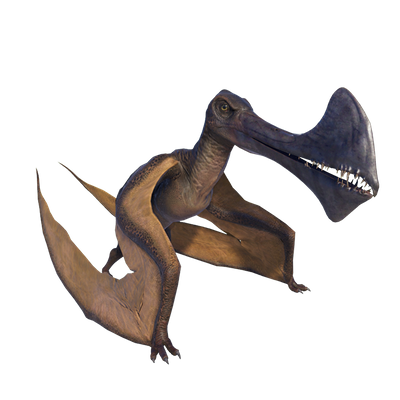

Useful Website
The piscivorous dinosaur Tropeognathus lived in South America during the Early Cretaceous period around 110m years ago, and is one of the largest pterosaurs ever to have existed with a wingspan of over 8m. The name Tropeognathus means ‘keel jaw’, and refers to the enlarged crests on its jaw, which the dinosaur uses to retain balance when diving into water to catch fish.
